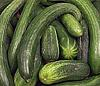
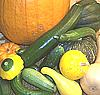
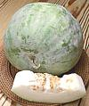
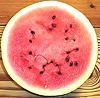
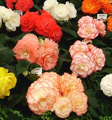
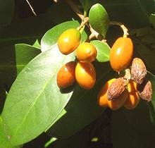

SAFARI
Users
- General & History
- Groups
- Links - to information on Squash, Gourds & Melons
Cucurbits - General & History
Why should we care what's a Cucumber, Winter Squash, Summer Squash, Pumpkin, Gourd or Melon? Which is which in culinary terms is not always clear, but if you know what they are you know a lot about how they will cook. Gourds, for instance, may look a lot like summer squash, but they cook quite differently. It's also important if you're trying to use the right thing for an ethnic dish.
Cucumbers
 Cucumbers (C.Cucumis.sativus) originated in India and are harvested short of maturity when they are green and the flesh is white, crisp and watery (they are never hollow). They are often pickled but also eaten raw in salads and sometimes cooked. When mature they turn soft, yellow and quickly rot. Varieties and Detail.
Squash
 Squash (including Pumpkins) are all originally from North, Central or South America, and nearly all belong to the genus Cucurbita (Cucurbit Cucurbita for clarity - (thanks, guys)). They were unknown in Europe, Africa or Asia until after 1500 but many are popular there now. Some squash dry out to a hard shell and become the decorative "gourds" you see around Thanksgiving, but they aren't really gourds. Varieties and Detail.
|
Summer Squash [Marrow (UK)] are harvested quite immature and are generally cooked, but are sometimes used raw in salads. They have thin tender skins, watery flesh and are not hollow because the seed mass is filled with pulp. They are easily overcooked, producing a mush with skins in it so use care. Summer squash need refrigeration and even so don't last more than a week. Most are botanically C.pepo which may have originated in North America but was used mostly in Mexico before 1500. Winter Squash are harvested when the seeds are mature. They have hard outer skins, very solid flesh and the seed area is hollow except for seeds and fibers. They can be stored at room temperature even for months (though edibility may decline). Botanically they may be C. maxima (South American), C.moschata, C.mixta (Cushaws (North America)) or C.pepo (Mexico). |
Gourds
 Gourds originate from India, Asia and Africa. Many dry out when mature leaving a hard durable shell, hollow and with seeds rattling around inside. They are often used decoratively and for containers, but some are harvested when immature and eaten, particularly Luffas (which produce the familiar Loofa bath sponge when mature) and Bottle Gourds. These are particularly nice for cooking because the flesh holds shape rather than mush down like squash.
The big container gourds the American Southwest is famous for are
actually Old World (Cucurbit Lagenaria) gourds brought by the Spanish
(there is a possibility some crossed the Atlantic to South America before
the Spanish). Again, Thanksgiving decorative "gourds" are actually dried
New World C. pepo squash, and Calabash "gourds" aren't gourds either,
they're the fruit of a tree related to begonias.
Varieties and Detail.
Melons
 Melons originated in Africa and Western Asia and are generally eaten mature when the flesh becomes sweet. The rind is tough but not hard and the flesh is always watery. Most are eaten raw but some are cooked, particularly in soup. Most have thick walls and a hollow center containing seeds, but others (Watermelon) are solid and uniform all the way through. Most varieties will store at room temperature maybe a week and not much longer refrigerated but some will last a few months. Varieties and Detail.
Begonias
 [genus Begonia of family Begoniaceae]
Yes, begonias are related to cucumbers. Not all begonias are edible, and some are edible in different ways. Those most commonly considered edible are the tuberous begonias (as in the photo) Begonia x tuberhybrida and the Wax Begonia Begonia cucullata which has escaped and is growing wild in Florida. Of course, you must be certain your begonias have not been exposed to insecticides or herbicides. Leaves and flowers of these two are edible, and petals are often used to decorate fancy salads. Flavor varies somewhat with color.
Begonia leaves have been cooked as vegetables from India through China
and Japan, and throughout Southeast Asia including Philippines,
particularly in soups and sauces. They are also used similarly in Brazil
and Mexico. Leaves are also sometimes used in salads. Note that begonia
leaves contain a significant amount of oxalic acid, the substance that
makes spinach tart, and they may have a slight bitter aftertaste.
Photo by Darorcilmir distributed under license
Creative Commons
Attribution-ShareAlike v3.0 Unported.
Karaka
 [New Zealand Laurel; Corynocarpus laevigatus of family Corynocarpaceae]
This leafy tree, native to New Zealand, grows to about 32 feet high.
It produces orange fruit that was important to the native Maori. The
flesh is edible but somewhat bitter. The seed kernels are highly toxic.
Reports from the 19th century say the Maori had a complex multi-day
process to detoxify the kernels. This process had to be carried out
carefully and completely. The result of not doing so would be violent
convulsions and muscle spasms so severe they could leave the limbs
permanently stuck in unusual positions, though death was only
occasional. Personally, I don't think I'll try these.
Photo by Kahuroa contributed to the Public Domain.
Links
- C2 - Cucurbit Names - University of Melbourne
- id="c3"> C3 - Indian Gourds - Seeds of India
- C4 - Gourds - Wayne's Word
- C5 - Pumpkins - University of Illinois